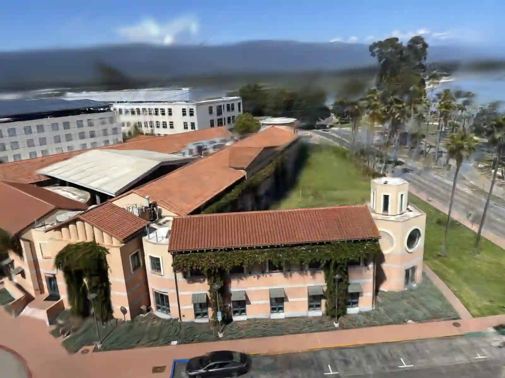

Kavli hall 3d reconstruction
Published May 16, 2025 • Updated Aug 10, 2025

Computer vision grad class at UCSB ECE 281B project 1 where we went though pipeline of making 3D construction of Kavli building given many pictures of it from different views.
Step 1
Made manual keypoint matches by hand and computed homography and fundemental matrix.
Step 2
Use superpoint+superglue to automate keypoint selection
Step 3
Use colmap to make keypoint matches to make 3d point cloud.
Step 4
Use gaussian splatting to render point cloud.
Thoughts
Could have got better reconstruction if had more views (get entire building in one shot like aerial view) and also if utilized GPS metadata, or used depth map like depth pro.